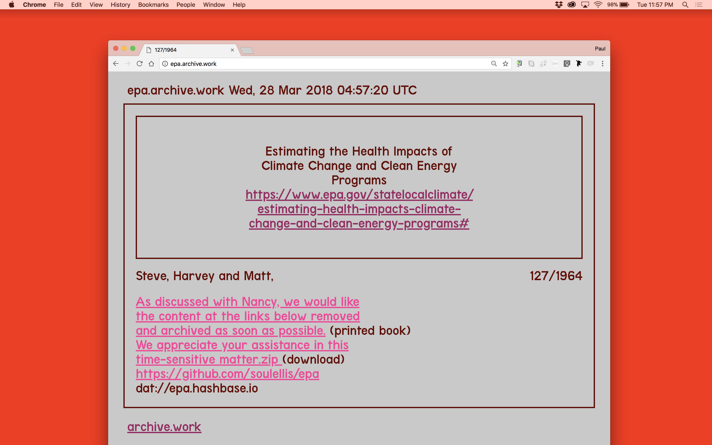
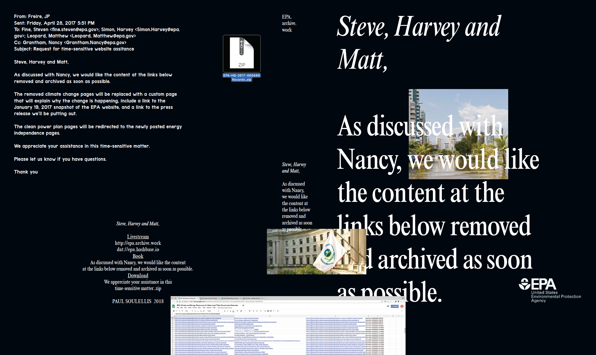
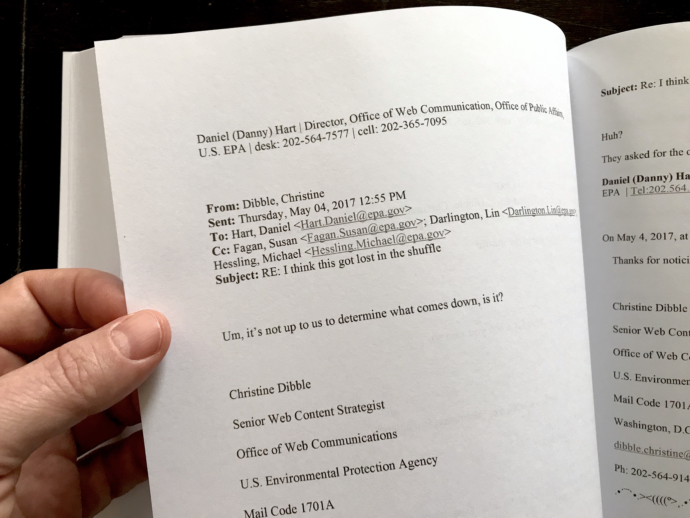
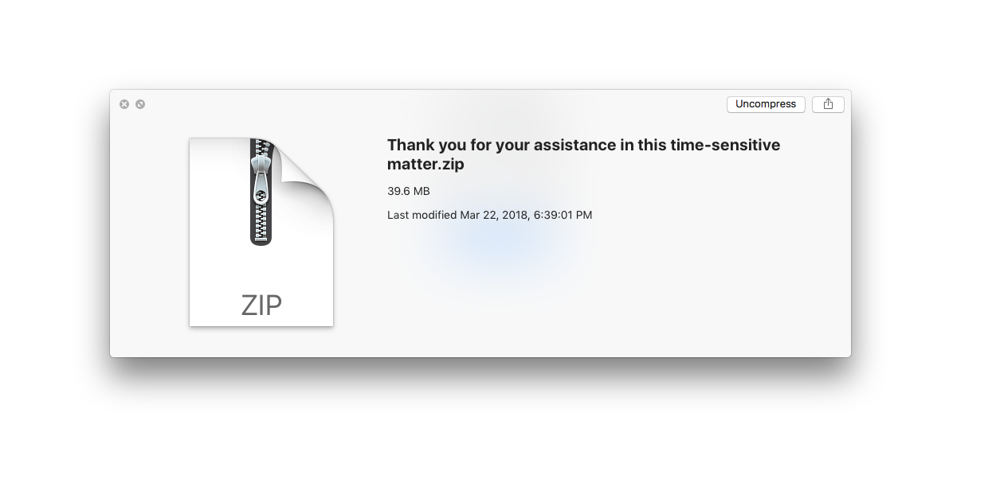

Steve, Harvey and Matt, (2018)

This project—a broadcast, a book, and a download—restores access to 1,964 climate change-related URLs that were removed from EPA.gov on April 28, 2017. The URLs point to web pages, documents, presentations, publications, and other files that were purged by the U.S. Environmental Protection Agency under the direction of EPA Administrator Scott Pruitt and the Trump administration. Some of the assets had been accessible on the web since 1997.

The April 28 purge redirected hundreds of climate change URLs to one of three new pages: “This page is being updated,” “Complying with President Trump’s Executive Order on Energy Independence,” or the scrubbed “Energy Resources for State, Local, and Tribal Governments.” But many document files (PDFs, PPTs, mp3s, docs) survived the purge and continued to live online, remaining hidden from public view without their corresponding links. Steve, Harvey and Matt, broadcasts the entire collection of climate change URLs ten times each day—a randomized mix of restored access and empty gestures. The 734-page printed book contains EPA emails and spreadsheets that detail the purge, obtained by Freedom of Information Act requests.

Livestream
Printed book
ZIP download (emails, spreadsheets, notes)
Project launch at Walker Art Center, March 2018.

Site development by Lukas Eigler-Harding.